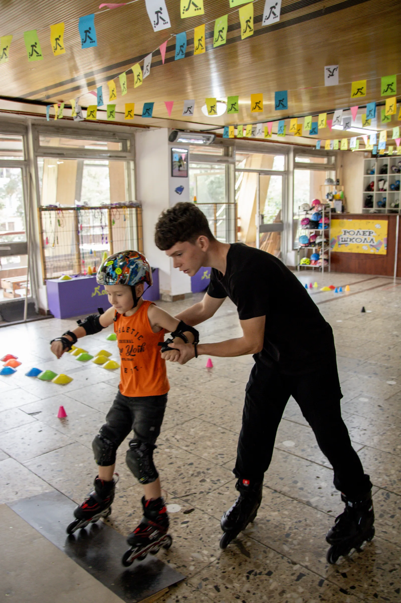
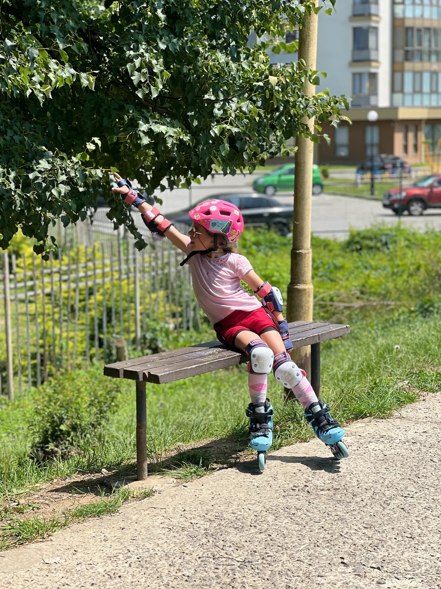
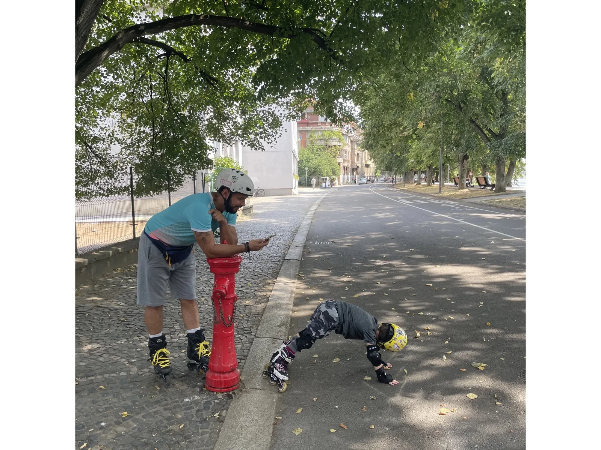
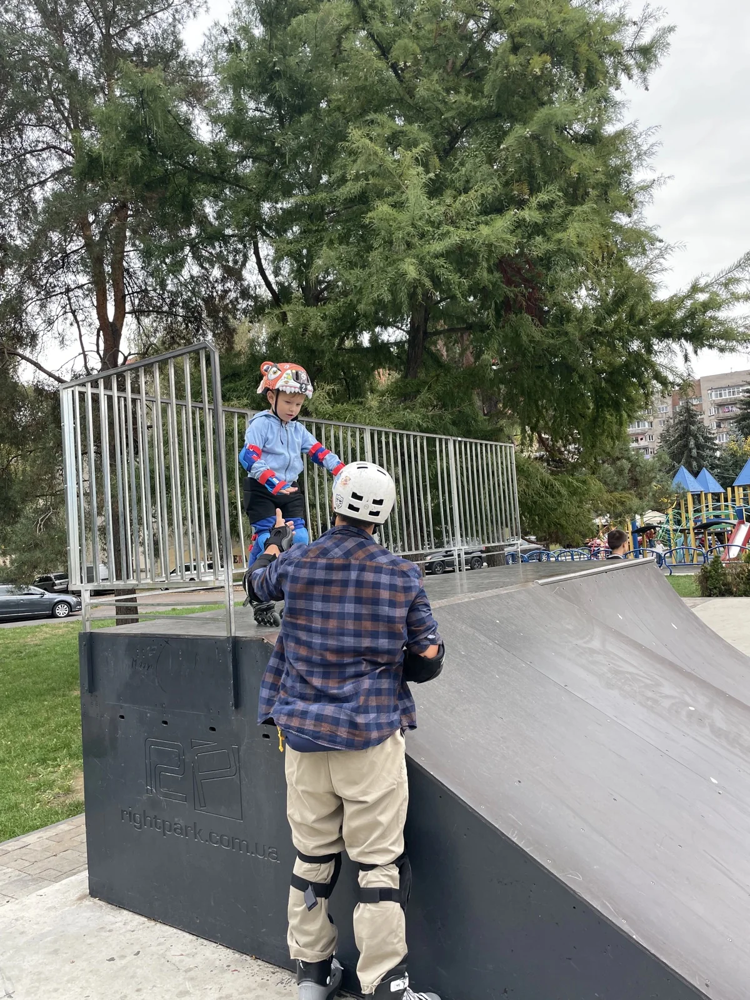
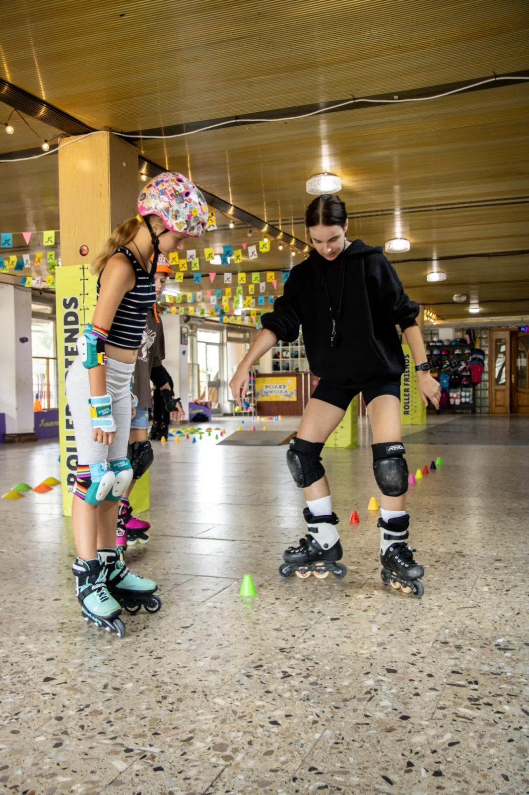
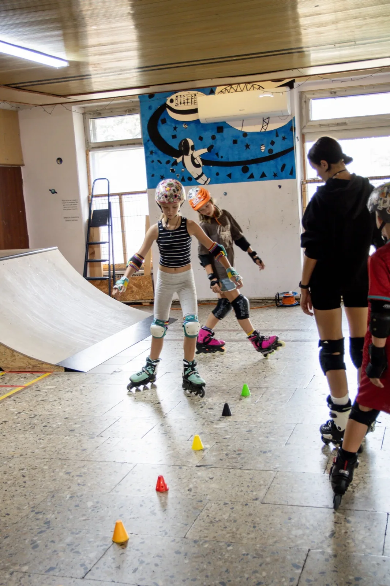

Наша ролер-школа відкрита для дітей з різними потребами та особливостями розвитку. Водночас ми не є реабілітаційним або спеціалізованим корекційним центром, тому можливість відвідування занять для дитини з особливими освітніми потребами визначається індивідуально.

Roller Friends roller school
Свій темп · увага тренера · результат
Індивідуальні тренування
Персональне тренування — максимум уваги та результату
Формати
Обирайте зручний формат:
Тренер працює тільки з вами або вашою дитиною, підбираючи програму відповідно до віку, рівня підготовки та поставлених цілей. Навчання проходить у комфортному темпі: від перших кроків на роликах до впевненого катання та складних трюків.
- 30 хвилин — оптимально для дітей від 3 років і для тих, кому складно довго утримувати увагу.
- 1 година — повноцінне індивідуальне тренування з розминкою, основною частиною та розтяжкою.
Відкрити зміст сторінки
01
Як проходить тренування
Знайомство, оцінювання рівня та персональна програма навчання.

Перший крок
Знайомство та визначення рівня
Кожне тренування в Roller Friends — це продумана програма, створена відповідно до віку, фізичних можливостей, рівня катання та цілей учня. Тренер стежить за прогресом, змінює вправи та допомагає послідовно розвивати необхідні навички.
Перше заняття проходить індивідуально. Це допомагає тренеру побачити, як учень тримається на роликах, оцінити фізичну підготовку, сильні сторони та навички, над якими потрібно працювати. На основі цього тренер складає індивідуальну програму навчання та підбирає комфортний темп занять.
02
Розминка та підготовка
Підготовка м’язів і суглобів, координація, гнучкість та впевнені рухи.

Підготовка до навантаження
Розминка у комфортному темпі
Тренування починається з розминки й розтяжки, які тривають приблизно 15–20 хвилин. Вони допомагають підготувати м’язи та суглоби до навантаження, розвивати гнучкість, координацію і зменшувати ризик травмування. Вправи підбираються з урахуванням віку та фізичних можливостей учня.
Для дітей віком від 3 років частина вправ може проводитися в ігровій формі. Через цікаві та зрозумілі ігри дитина поступово звикає до фізичної активності, вчиться повторювати рухи й виконувати завдання інструктора.

Поступовий розвиток
Від простих вправ до повної розминки
Навіть із наймолодшими учнями ми виконуємо прості вправи, які відповідають їхньому віку та рівню підготовки. Згодом діти поступово переходять до повноцінної розминки та розтяжки.
Регулярні заняття позитивно впливають на фізичний розвиток дитини: допомагають зміцнювати м’язи, розвивати координацію, рівновагу, гнучкість і витривалість. Дитина стає фізично міцнішою, активнішою та впевненішою у своїх рухах.
03
Основна частина тренування
Вивчення елементів, страхування, аналіз техніки та закріплення навичок.

Техніка крок за кроком
Пояснення, показ і практика
Після розминки розпочинається основна частина тренування — вивчення та відпрацювання вправ. Інструктор показує кожен елемент, пояснює техніку його виконання та за потреби розділяє складний рух на простіші етапи.
Під час виконання нових або складних елементів тренер страхує учня, контролює правильність рухів і допомагає почуватися впевненіше. За необхідності виконання вправи знімають на відео, щоб разом переглянути її, детально розібрати помилки та показати, що саме потрібно виправити.

Завершення заняття
Додаткові вправи та зворотний зв’язок
Додаткові вправи та завершення. Учень може виконувати вправи зі скакалкою, працювати над зміцненням м’язів ніг, додатковою розтяжкою або брати участь у рухливих іграх. В кінці заняття батьки отримують короткий зворотний зв’язок, а учні — наліпки за старання, виконані завдання та особисті досягнення.
04
Індивідуальний підхід до дітей з особливими освітніми потребами
Формат занять і можливість відвідування погоджуються з адміністратором до першого запису.
Важливо перед першим записом
Якщо ваша дитина має особливі освітні потреби, розлад аутистичного спектра, особливості сенсорного сприйняття, поведінки чи інші потреби, обов’язково повідомте про це адміністратора до першого запису на заняття.
Під час попередньої консультації ми обговоримо особливості дитини, формат занять та можливі умови відвідування, щоб зрозуміти, чи можемо ми забезпечити комфортне та безпечне заняття в межах можливостей нашої школи.
За потреби адміністратор підбере відповідного інструктора та оптимальний формат занять.
Наш підхід
Ми розуміємо, що кожна дитина має свій темп адаптації та навчання. Тому, якщо заняття погоджене, інструктор може враховувати індивідуальні особливості дитини: темп виконання вправ, потребу в додаткових поясненнях або перервах, особливості сприйняття простору, шуму та взаємодії.
При цьому ролер-школа не надає медичних, реабілітаційних чи корекційних послуг. Наше завдання — навчання катанню на роликах у межах можливостей та формату роботи школи.
Загальна інформація для всіх індивідуальних тренувань
Будь ласка, не здійснюйте самостійний запис дитини на групове заняття без попередньої консультації з адміністратором.
Це допоможе нам заздалегідь оцінити формат занять та організувати відвідування максимально комфортно для дитини, інструктора та інших учасників групи.